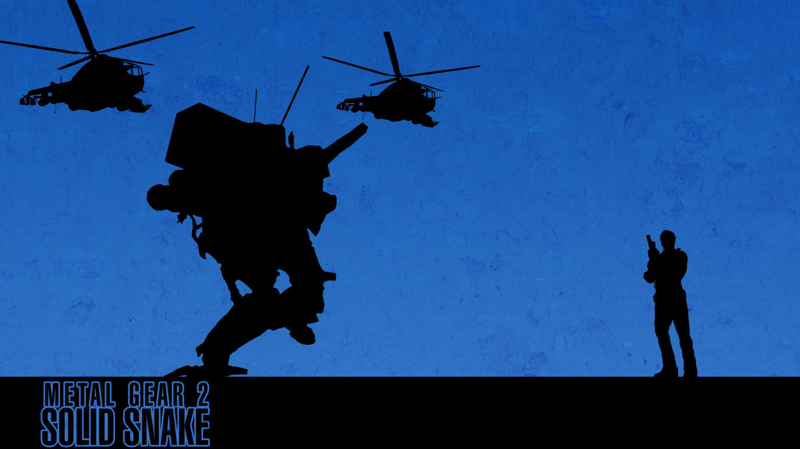

Еще одна часть серии, которая была разработана для MSX. Она стала в разы лучше предыдущей из-за новых возможностей в серии.
Игра не доступна на ПК, но можно сыграть через костыли. Чтобы запустить данную игру потребуется скачать эмулятор PS3, установить MGS3 (или сразу HD Collection) и через меню MGS3 запустить MG2:Solid Snake.
Для игры на ПК Вам потребуется:
Также есть вариант запустить через эмулятор PS2, но потребуется скачать MGS3: Subsistence.